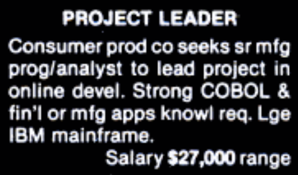

App Engineering
App Engineering
Was ist Software?
Programme und Dokumentation
- Sammlung von Artefakten
- lateinisch artis (Handwerk) und factum (das Gemachte)
- Ergebnisse eines Arbeitsprozesses
Gründe zur Entwicklung
- Bedürfnisse eines Kunden (Individualsoftware)
- Marktchancen (Softwareprodukt)
Eigenschaften guter Software
- Bereitstellung der benötigten Funktionalität und Performanz
- Wartbar
- Verlässlich
- Nutzbar
Komplexitätsarten
Funktionen
- Anzahl der zu erfüllenden Funktionen
Daten
- Viele/komplexe Daten
Algorithmik
- Z.B. komplexe Berechnungen
Zeitabhängiges Verhalten
- Nebenläufigkeit, Synchronisation, Zeitbedingungen
Umgebung
- Eingebettete Systeme
Benutzungsoberfläche
- Komplexe Interaktion
Arten von Software
Administrativ, kaufmännisch, betriebswirtschaftlich
- Komplexe Daten und/oder Funktionen
Technisch-wissenschaftlich
- Komplexe Funktionen und Algorithmen
Softwareintensiv
- Algorithmik, zeitabhängiges Verhalten, Umgebung
GUI-intensiv
- Komplexe Benutzungsoberfläche
Warum ist Entwicklung schwierig?
Software ist immateriell
- „Anfassen“ oder „Sehen“ nur indirekt möglich
- Dokumentation und Code divergieren
- Entwicklungsfortschritt nicht objektiv messbar
Software altert
- Indirekte Alterung: Einsatzumgebung ändert sich
- Rahmenbedingungen ändern sich
Software ist leicht änderbar
- Leichte Änderbarkeit bedingt aber auch häufigere Seiteneffekte
Software ist schwierig zu messen
- Qualität schwer quantifizierbar
- Korrelation zwischen Messbarem und Qualität unklar
Große, verteilte Teams
- Abstimmung
- Unterschiedlicher Stil und Qualität
- Viel Arbeit an „fremdem“ Code
Abbruchraten nach FP (1995)
Apps
Computerworld (1981)

MacApp (1985)
iOS Apps (2007)
The full Safari engine is inside of iPhone. And so, you can write amazing Web 2.0 and Ajax apps that look exactly and behave exactly like apps on the iPhone. And these apps can integrate perfectly with iPhone services. […] And guess what? There’s no SDK that you need!
Eine Milliarde Apps (2009)
Was ist Software Design?
Grundlagen
Verbindung von
- Software Engineering
- Usability Engineering
Ausgangspunkt
„Design is relevant to all software engineering activities and is the central integrating activity that ties the others together.”
Peter Freeman (1976)
„Design encompasses all the activities involved in conceptualizing, framing, implementing, commissioning, and ultimately modifying complex systems. [...] Specifying an artifact means you are shaping the design to meet its requirements.”
Peter Freeman / David Hart (2004)
Analogie zum Bauhaus
„We have to pull the whole thing together. We have to destroy these separations between painting and sculpture and architecture and design and so on. It is all one.”
Walter Gropius

Photo by Ross Sokolovski on Unsplash
„I had to bring in two types of teachers into the Bauhaus. One for the technique and one for the form. And I married these two in each workshop. [...] When we later moved over to Dessau, the first generation of young people educated in the Bauhaus were now ready to be head of the workshops.”
Walter Gropius
„We developed really quite an understanding that anything we do, where it a painting or a building or a chair or anything, we have to study the human being using it. That is the starting point. Not this or that aesthetic idea. That is the true functionalism.”
Walter Gropius
Qualitästssicherung
Überblick
Werkzeuge
Lösung von Aufgaben

Essentielle Werkzeuge
Editor
Schreiben von Code für Software
Übersetzer/Binder/Interpreter
Erstellung ausführbaren Codes
Heute typischerweise verbunden in IDE (integrated development environment)
JetBrains IDEs
- Für Studierende kostenfrei nutzbar
- Rider (.NET)
- IntelliJ IDEA (JVM)
- Android Studio (Android)
- App Code (iOS)
- PyCharm (Python)
- WebStorm (JavaScript)
IDEs
- Xcode (iOS, macOS)
- Visual Studio (.NET)
- Visual Studio Code (leichtgewichtiger Allzweckeditor)
Weitere Werkzeuge
- Software besteht aus Artefakten (Dokumente und Code)
- Es gibt unzählige Werkzeuge verschiedenste Artefakte zu erstellen
- Artefakte selbst sollten mindestens versionsverwaltet werden
Versionskontrollsysteme
Überblick
git ist aktuell dominant
Einige Alternativen
- SVN (Subversion) – anders als git zentral
- Proprietäre Systeme
Funktionsweise
- Auf zentralem Server wird aktueller Stand von Dateien gehalten
- Nutzer können lokale Änderungen senden und globale Änderungen empfangen (Konflikte möglich)
- Alle Änderungen werden versioniert
- Manuelles Versionieren möglich
Vorteil von git
- git ist dezentral
- git ist gut im Zusammenführen von Änderungen an gleicher Datei
- git ist flexibel und ermöglicht verschiedene “Workflows”
- Centralized Workflow
- Feature Branch Workflow
- Gitflow Workflow
- Forking Workflow
Grundlagen
- Ein „Repository“ dient als verwalteter Speicherort für digitale Objekte
- git ist dezentral: lokale und entfernte Repositories existieren autark
- Ein „Commit“ führt Änderungen zunächst in lokalem Repository durch (vorher ist „Add“ nötig)
- Erst ein Push bringt diese Änderungen in ein zentrales Repository (Änderungen beziehen über „Pull“)
- Aussagekräftige Kommentare sind wichtig!
„Happy Path“ im Centralized Workflow
- Pullen, bevor man selbst Änderungen vornimmt
- Abgestimmte lokale Änderungen durchführen (ggfs. mit lokalen Zwischencommits)
- Lauffähigkeit der Änderungen prüfen
- Änderungen mit aussagekräftigem Kommentar commiten und pushen
Realität: Änderungskonflikte
- Es wird immer mal wieder vorkommen, dass Änderungen in Konflikt stehen
- Synchronisieren und Mergen zum Konfliktlösen
VCS für ihr Semesterprojekt
- Einladung über Link
- Team beitreten oder neu gründen
.png)
Leeres Repository
.png)
Leeres Wiki
.png)
Anforderungs-dokumentation
Textverarbeitungsprogramme
- Für viele Dokumentationszwecke einsetzbar
- Beispiele
- LibreOffice Writer
- Microsoft Word
- Apple Pages
- Gerne natürlich auch LaTeX
Kollaboration / Wissensmanagement
- Für viele Dokumentationszwecke einsetzbar
- Beispiele
- Atlassian Confluence
- MediaWiki
- Microsoft SharePoint
- In Bitbucket und GitHub sind einfache Wikis integriert!
Spezielle Werkzeuge
- Es existieren zahllose weitere spezielle Tools
- Führt hier zu weit
- Beispiele:
- Serena Dimensions RM
- IBM Rational DOORS
- IBM Rational Requisite Pro
- PTC Integrity
- objectiFRM
Projektplanung
Microsoft Project
- Projektmanagementstandard
- Kommerzielles Produkt
- Nur für Windows
ProjectWizards Merlin Project
- Beste Alternative für macOS
- Kommerzielles Produkt
Konzeption
UML-Modellierung
Kostenfrei für Studenten
- Modelio
- Visual Paradigm Community Edition
- gliffy (nur Zeichnen)
- PlantUML (nur Zeichnen)
Verbreitet in der Industrie
- SparxSystems Enterprise Architect
- No Magic MagicDraw
- IBM Rational Rhapsody / Software Architect
Schnittstellendesign
Kostenfrei für Hochschulen
- Axure RP
- Sketch
- Figma
Spannende Alternativen
- Adobe XD
Durchführung
Aufgabenmanagement
- Verwaltung und Zuweisen von Aufgaben
- Beispiele
- Atlassian JIRA
- MantisBT
- In Bitbucket und GitHub ist einfaches Aufgabenmanagement integriert!
Testmanagement
- Verwaltung und Durchführung von Tests
- Beispiele
- inflectra SpiraTest
- HP Quality Center
- QMetry
Beispiel
Aufbau bei adesso mobile solutions
Tools für dieses Semester